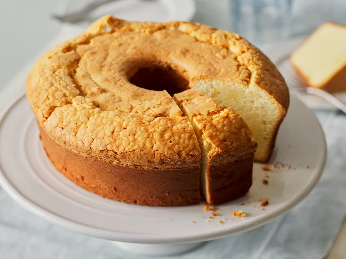

Cream Cheese Pound Cake

This cream cheese pound cake is a moist, dense, and extremely delicious dessert.
Ingredients
- Butter: This easy recipe starts with three sticks of butter.
- Cream cheese: Of course, you’ll need cream cheese! One 8-ounce block, to be exact.
- Sugar: You’ll need three cups of white sugar.
- Eggs: Six eggs lend moisture and help bind the batter together.
- Flour: All-purpose flour gives the cake structure.
- Vanilla: Vanilla extract enhances the overall flavor of the cream cheese pound cake.
Steps
- Cream the butter and cream cheese together, then gradually beat in the sugar.
- Beat in the eggs two at a time, then mix in the flour and vanilla.
- Bake in the preheated oven until a toothpick comes out clean.